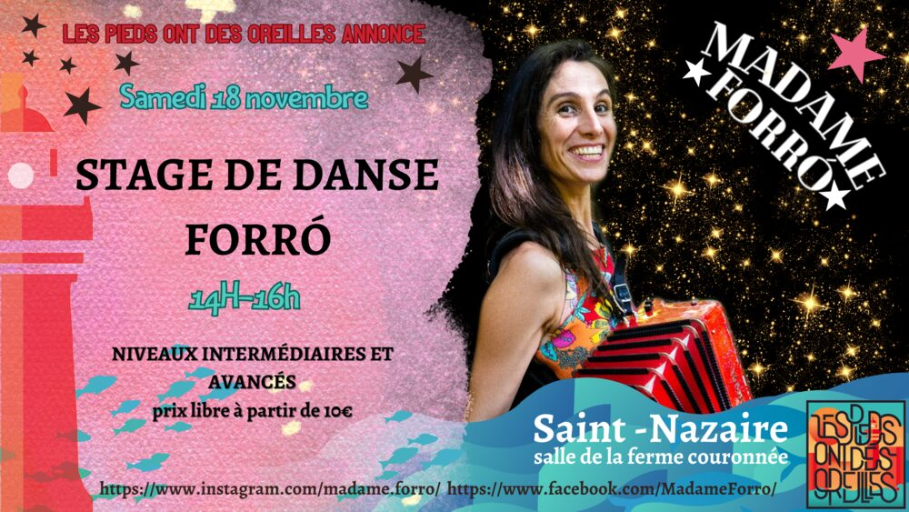

Concert et bal forró avec Madame Forró & Balanceio

Lieu : La P'tite Scène des Halles, Saint-Nazaire
Madame Forró, française expatriée au Brésil, danseuse, clown, chanteuse et accordéoniste, accompagnée de Julian Biblocq (zabumba) et Isadora (triangle et voix). Concert de 18h à 22h30 à la P'tite Scène des Halles, jauge limitée à 60.
L'après-midi (14h-16h), stage de danse forró niveau intermédiaire : connexion, trava (blocage) et musicalité.
Aussi au programme
- 18 novembre 2023 : Stage de danse forró inter/avancé avec Madame Forró (Ferme Couronnée, Saint-Nazaire)